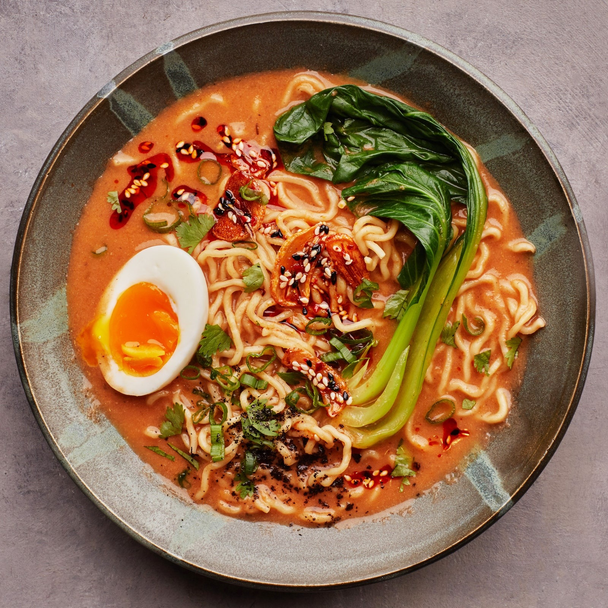

Ramen

Description
This is a vegeterian ramen recipe.
This has become a staple in my house and is made often.
The key to a good ramen dish is in the broth.
After that, its simply a matter of adding in whatever kind of vegtables you may want!
Below are my recommended picks.
The broth
Ingredients
- Vegetable broth
- Miso paste
- Garlic
- Ginger
- Seaseme oil
Steps
- Mince the garlic and ginger
- Heat the seaseme oil in a sauce pan
- Add the minced garlic and ginger, cook until fragerent
- Add in the miso paste and cooke for 3-5 minutes
- Slowly stir in the vegetable broth to avoid lumps
- Turn the burner to low and let simmer
The rest of it
Ingredients
- Ramen noodles
- Green onions
- Seaseme seeds
- Carrots
- Raddishes
- Bok choy
- Soft boiled egg
- Cili oil
- Put a large pot of water on to boil while you preapre the rest of the ingredients.
- Slice the raddishes into thin circles.
- Using a potatoe peeler, peel the carrots into long strips.
- Cut the bok choy in half length wise multiple times until desiered size.
- Cut off the white ends of the green onions and discard. Thinly slice the remaining.
- Cut the egg in half length wise.
- Once the water is boiling; boil the carrots, raddishes, and bok choy one at a time for 1-3 minutes or until desiered. Place each vegtables on a cutting board or in seperate bowls to be used later.
- Boil the ramen noodles for 5-7 minutes, or until done. Scoop out the cooked ramen and place it directly into the serving bowls.
- Top the bowl with the ramen with the cooked vegtables. Laddle in the broth until desired amount. Make sure to drizzle the broth over the vegtables.
- Place the desiered amount of green oinions, seaseme seeds, soft boiled eggs, and chili oil to serve.
- Enjoy!